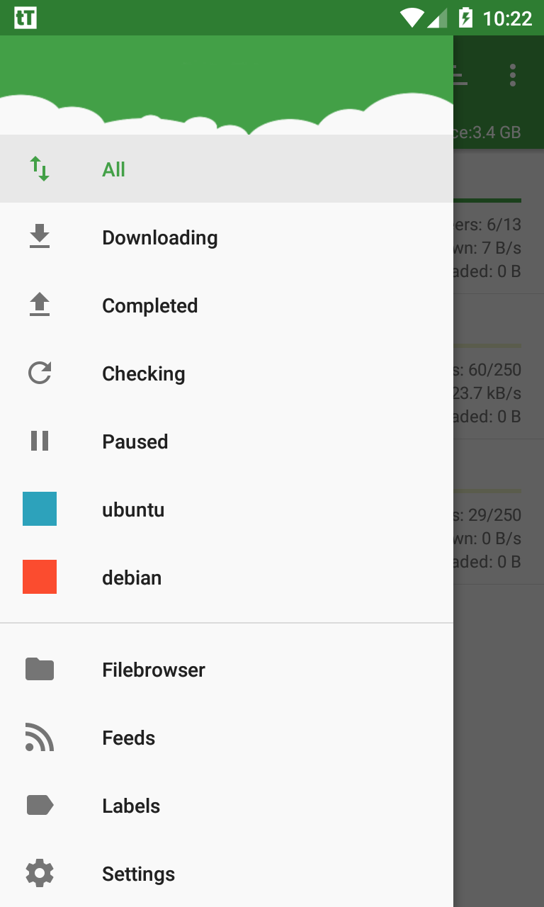

用 tTorrent 搭一条手机端 BT 资料采集流水线
每周要收十几份分散在各个种子站的技术资料和影视资源，以前一个个手动下、手动搬、手动分类，现在靠 tTorrent 的标签、RSS 和自定义路径串成了一条不用管的流水线。
我每周要收十几份分散在各个种子站的技术资料和影视资源。这个习惯从大学下课件就有了，工作后变成攒行业报告、开源代码镜像、4K 纪录片，总量不大但来源散——有的在公开 tracker，有的在小众私种，有的只给磁力链接。
以前的流程是这样：浏览器找种子 → 点开下载 → 切到文件管理器搬去对应文件夹 → 回家再把 SD 卡内容同步进电脑。一份资料走四步，十几份就是四十多步。周末坐在办公桌前反复点来点去，半小时就过去了，而且经常搬错位置——"工作资料"里混进电影，"追剧"文件夹里躺着一份行业白皮书。
后来把tTorrent官网插进了这条链路，现在流程变成：订阅 RSS、设好标签、手机插上充电线就自动跑，回家拔掉线直接从对应文件夹取。少了两次手动复制，分类也再也没出过错。
旧流程卡在哪
先说痛点。我试过桌面端 BT 客户端跑定时任务，也试过买云服务器跑 transmission daemon——前者得一直开着电脑，后者按月付费还得折腾 VPN 连回来。最终还是手机最省事：二十四小时在线、家里 Wi-Fi 不限速、电池充电插着就行。
但手机端 BT 的老问题是"下完了放哪"。默认保存路径永远是 Downloads 根目录，几百个种子堆积在一起，想找一个上周下的 PDF 得翻五分钟。手动搬文件又回到了四步流程里的那一步。
第二个痛点是"怎么触发下载"。每个种子站都得单独刷一遍，有了新内容手动复制磁力链接、手动粘贴进去。我试过让几个站的 RSS 推邮件过来，邮件里的链接再手动打开——这条链更折腾。
新流程：三个组件串起来
现在的工作流只有三个组件：tTorrent 做下载引擎 + 标签分类，RSS 做自动触发，文件同步 App 做云端备份。核心是 tTorrent 里两个之前没注意到的功能——标签自定义保存路径和 RSS 自动打标签。
第一步是把所有下载源转成 RSS。公开 tracker 大多自带 RSS 输出，私种站没有的我就用一个简单的 Python 脚本每周爬一次种子列表、生成一份本地 feed 文件放在 NAS 上。tTorrent 支持直接订阅网络 RSS，添加 feed 地址后它会按你设的间隔去轮询——我设的是每小时一次，够了。
第二步是给每个种子源配一个标签，并且在标签里指定保存路径。比如把"技术资料"标签的 Custom save path 指到 /sdcard/BT/tech，"追剧"指到 /sdcard/BT/shows，"临时下载"直接放内置存储。这个设置藏在 Settings → Labels 里，去tTorrent文档翻了一下才确认每个标签可以独立配一个保存目录，新建种子时只要选对标签，文件自动进对应文件夹。

第三步是让 RSS 触发的下载自动带上对应标签。tTorrent 的 RSS feed 配置里有个选项是"Assign label to new downloads from this feed"——勾上之后，这个 feed 拉到的每一个种子都会自动挂上你指定的标签，连手动选都省了。
整条链串起来是这样的：种子站有新内容 → RSS feed 更新 → tTorrent 一小时内轮询到 → 自动创建种子并打上标签 → 标签对应的保存路径决定文件去哪 → 下载完成后文件同步 App 自动把新文件推进云盘。中间零人工介入。
实操中最容易断链的两个环节
这套流程跑了两个月，大部分时间确实不用管，但有两个坑第一次没踩对就断了整条链。
第一个是 SD 卡写入权限。我的主力手机是 Android 11，tTorrent 设成写 /sdcard/BT/ 没问题。但备用机是台 Android 4.4 的老设备，第一次把保存路径选成外置 SD 卡之后，所有种子报 permission denied。折腾了半小时才搞清楚这是 KitKat 的系统级限制——第三方 App 只能写自己的私有目录，不能随便写 SD 卡根目录。
解法是手动在 SD 卡根目录创建 /Android/data/hu.tagsoft.ttorrent.lite 这个文件夹，然后把标签的 Custom save path 指向它。老设备上这个路径可用了，但代价是卸载 tTorrent 时这个文件夹会被系统一起删掉。所以我只在主力机上用外置 SD 卡做主存储，老设备只用来做 RSS 轮询的备份节点，保存路径切回内置存储就没事了。
第二个坑是 FAT32 的 4GB 限制。SD 卡出厂默认是 FAT32 格式，单文件超过 4GB 就写不进去。第一次下一部 8GB 的 4K 电影单文件种子，进度到一半直接报错"文件太大"，而我之前根本不知道 SD 卡格式是什么。
解决办法是把 SD 卡格式化成 exFAT。exFAT 是微软专门给移动存储设计的，没有 4GB 单文件限制，Windows 和 macOS 都能直接读写，现代 Android 系统也原生支持。格式化之前记得把卡里的东西先拷到电脑，我那次因为忘了备份损失了几十集没看完的剧。

磁力链接那步怎么接
磁力链接是这套流程里最特殊的一环——不像 .torrent 文件可以直接丢进 RSS，磁力链接本身是无文件种子，需要 tTorrent 去 DHT 网络拉取元信息。我处理磁力链接的办法分两种：
公开种子站的磁力链接可以直接拼进 RSS feed，tTorrent 解析 feed 时能自动识别 magnet 协议开头的条目标题。私种站的磁力链接没法公开 RSS，我就用浏览器唤起：在浏览器里点一下磁力链接，系统弹出"用 tTorrent 打开"，确认后直接进下载流程。安装包从tTorrent下载拿，第一次用之前要去 Android 设置里把 magnet 协议的默认打开方式勾成 tTorrent，不然每次都弹选择框。
这个唤起过程不是全自动的，但因为磁力链接种子不多——一个月也就五六份私种——手动点一下比写脚本爬私种站省事多了。
效果和边界
量化一下：以前每周花半小时手动搬文件、改分类，现在这步完全没了。标签 + 自定义路径的组合让下载完的文件直接到位，我从云盘拉资料的时候按目录找就行，不用再翻 Downloads 根目录。RSS 自动触发之后，种子源那边一旦更新，我最多延迟一小时就能收到，比自己每天刷三次种子站还及时。
但这套流程有明显的边界。
首先，tTorrent 是 Android 独占的。如果哪天主力设备换了 iPhone，整条链得重搭——iOS 没有原生 BT 客户端，也不允许 App 在后台持续做种和下载。我现在留着一台 Android 老手机专门跑这个，插着充电线不关机，成本几乎为零。
其次，私种站的磁力链接没法完全自动化。需要邀请码的私种站不可能公开 RSS，我也不想写爬虫去碰——既违反规则又有封号风险。所以私种部分还是手动触发，但量不大，能接受。
第三，标签太多的时候会乱。我试过建十几个标签，每个种子源一个，结果主界面过滤器的下拉菜单变成了一长串，找个标签比找文件还费时间。最后砍到五个：技术资料、追剧、影视、临时、归档。够用了，多出来的用子文件夹在标签的保存路径里分层解决，比如 tech/Python/、tech/ML/，一个标签底下再分目录。
什么时候这套流程不划算
如果你只是偶尔下一份文件，手动点几次比配置 RSS、设标签、格式化 SD 卡快得多。这套流程的投入产出比临界点大概在"每周三份以上来源不同的种子"——少于这个量，手动操作不会比自动化慢多少。
但对我这种每周十几份、来源跨四五个种子站、还要归档到云盘的场景，tTorrent 加上标签 + RSS + 自定义路径的组合，是目前能找到的最轻量的方案。不用跑服务器，不用开桌面机，一台插着电的 Android 手机就够了。我把整套标签路径的推荐模板和 RSS feed 配置示例分别同步到了GitHub、Gitee和GitCode，国内网络直接拉 Gitee 那份最快。